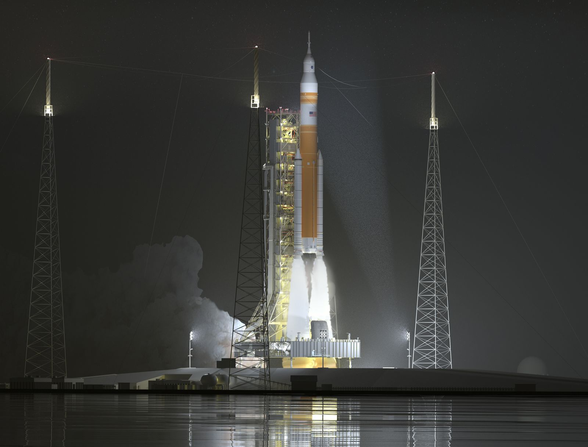
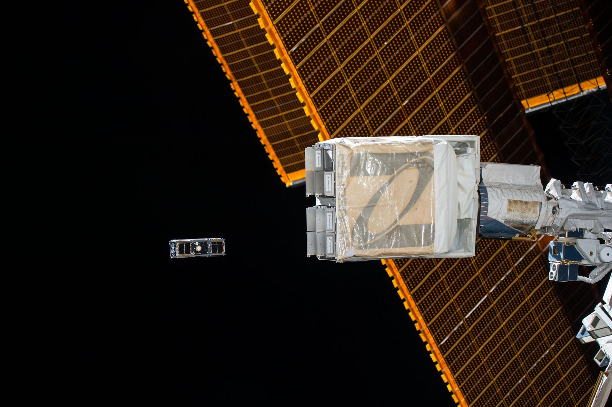
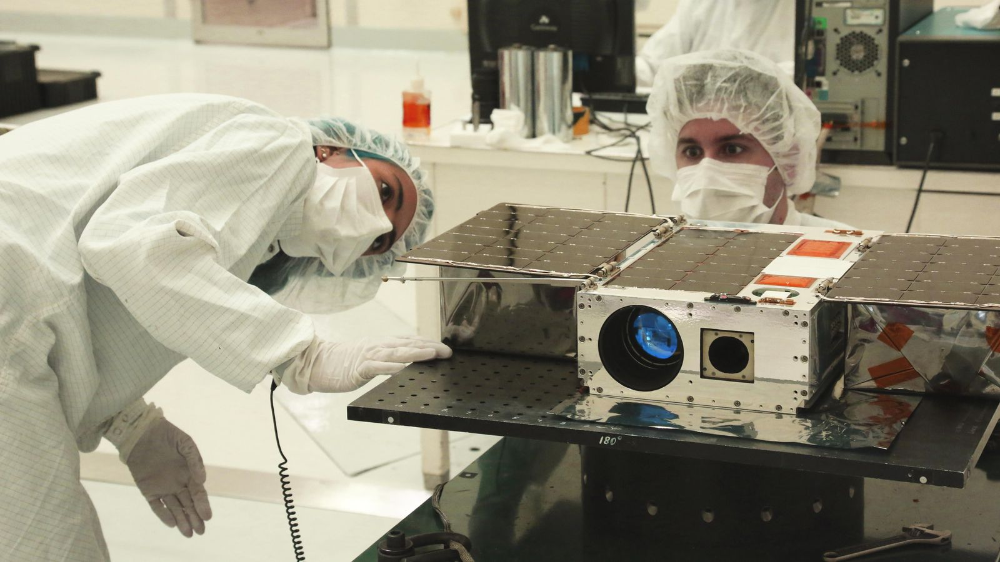
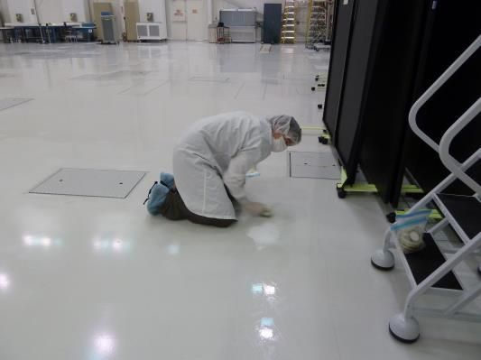
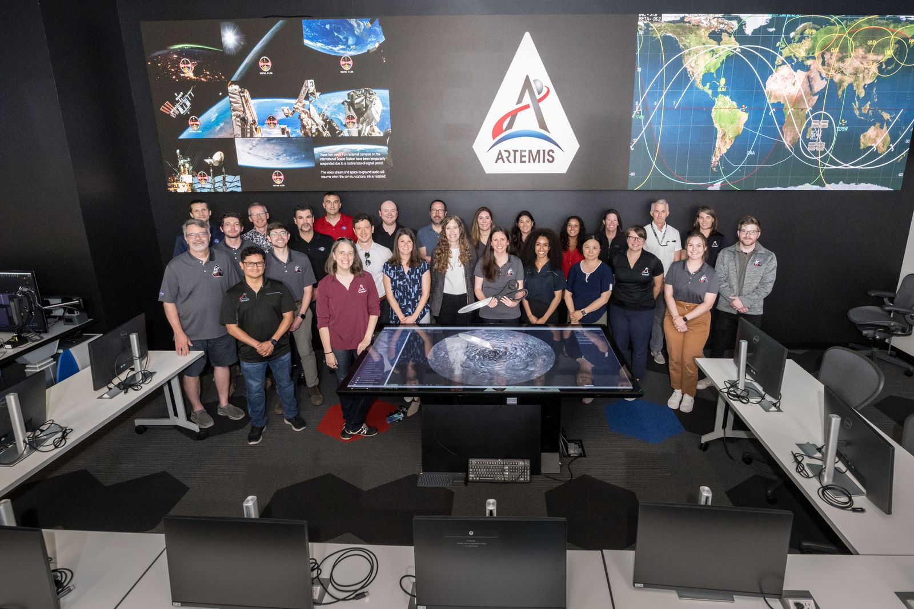
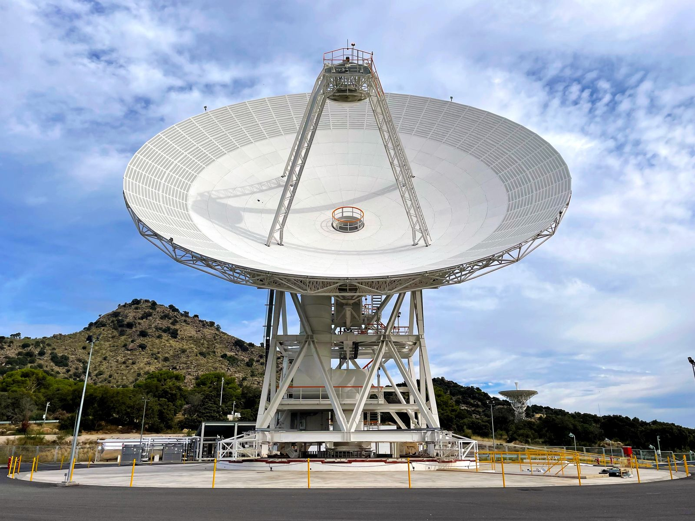

ASE-Lab. は特定の大学に属さず、全国の学生が集まる学びの場です。その中で 「学習」から一歩踏み出し、「実践知」を掴むためのプロジェクト活動が Project Team。 シーズンごとに全国から集い、実際の宇宙・航空プロジェクトに挑みます。 所属を誇り、責任を持ち、仲間と本気で挑む——その経験そのものが財産です。
全国から選ばれて集うメンバーの一員として、ここに所属することそのものを誇りにできる。
座学では届かない設計・試験・運用の現場へ。手を動かして初めて分かる実践知を得る。
北海道から沖縄まで、大学の垣根を越えた仲間とチームを組み、責任を分かち合う。





SAMPLE 記事・画像はプレースホルダー（NASA公開画像）です。公開時に自チームの内容へ差し替えます。
一年を一つのシーズンとして、選考から成果発表までをチームで駆け抜けます。
全国から意欲ある学生を募り、シーズンメンバーとして招集する。
ミッションを定義し、役割を編成。チームとしての土台をつくる。
設計〜製作〜試験を反復。現場のメンターと共に実践知を積み上げる。
シーズンの成果を発表し、次代へつなぐ。挑戦の記録を残す。
SAMPLE パートナー欄はプレースホルダーです。